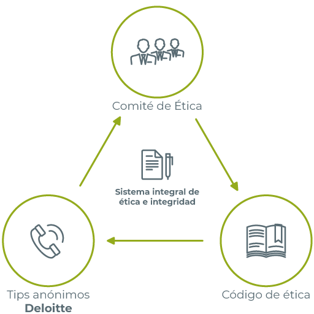

El entendimiento de que vivimos en un mundo interconectado e integrado, considerando el Universo como un Sistema, tiene implicancias morales muy profundas. Este enfoque sistémico revela la complejidad y la interdependencia de todos los elementos que componen nuestra realidad, desde los ecosistemas naturales hasta las estructuras sociales y tecnológicas, donde una visión holística plantea desafíos éticos significativos para quienes estudian y aplican la Ciencia de Sistemas.
1. Responsabilidad Moral del Pensador de Sistemas
• Observación Parcial e Interpretativa: Reconociendo que toda observación es inherentemente limitada y subjetiva, el Pensador de Sistemas debe ser consciente de sus propios sesgos y limitaciones. Esto implica un compromiso continuo con la auto-reflexión y la humildad intelectual.
• Uso Adecuado del Enfoque y Principios de Sistemas: Para mejorar la comprensión de la realidad y proponer soluciones efectivas, es fundamental dominar el Enfoque Sistémico y sus Principios. Esto incluye conceptos como la retroalimentación, la emergencia, la homeostasis, y la adaptabilidad. Al aplicar estos principios, el Pensador de Sistemas puede abordar problemas complejos de manera más holística y eficaz.
• Proponer Soluciones Éticas: Las soluciones propuestas deben ser no solo técnicamente viables sino también éticamente responsables. Esto significa considerar el impacto a largo plazo de las decisiones, incluyendo efectos colaterales y consecuencias no intencionadas.
2. Responsabilidad en la Selección y Construcción de Metodologías
• Metodologías Integrales y Eficaces: Es imperativo desarrollar y utilizar metodologías que aborden la complejidad de los sistemas de manera integral. Estas metodologías deben ser capaces de captar la interconexión y la interdependencia de los componentes del sistema, minimizando el margen de error.
• Ciclos de Aprendizaje y Lecciones Aprendidas: Cada ciclo de aprendizaje debe incorporar las lecciones aprendidas de experiencias previas, evitando así la repetición de errores y el desperdicio de recursos. Esto requiere una cultura organizacional que valore la reflexión y la mejora continua.
• Honestidad y Transparencia: La honestidad es crucial en todas las etapas del proceso sistémico. Esto incluye ser transparente sobre las limitaciones de los modelos y las incertidumbres inherentes en las predicciones y las soluciones propuestas. La transparencia fomenta la confianza y facilita la colaboración efectiva entre diferentes partes interesadas.
• Evaluación Continua: Los sistemas y metodologías deben ser evaluados continuamente para asegurarse de que se mantienen eficaces y relevantes en contextos cambiantes. Esto incluye la actualización constante de conocimientos y herramientas para enfrentar nuevos desafíos.
Al cumplir con estas responsabilidades, los Pensadores de Sistemas pueden contribuir de manera significativa a la comprensión y mejora de la realidad compleja en la que vivimos.
